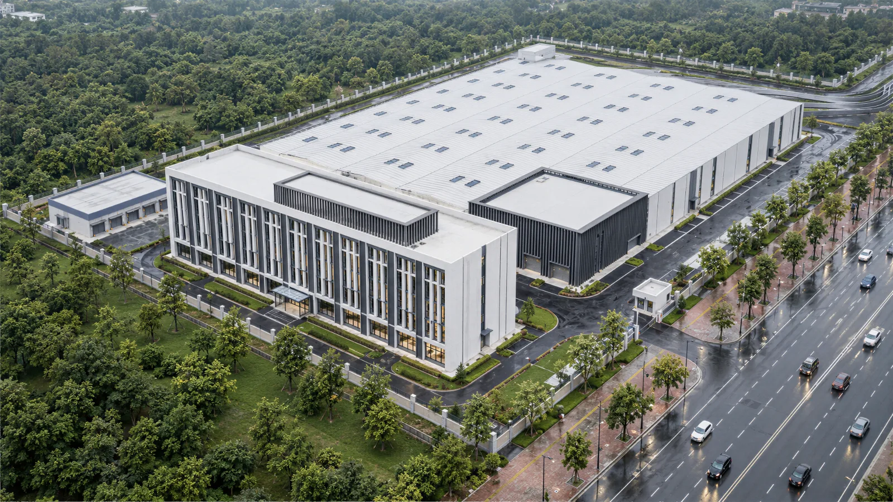
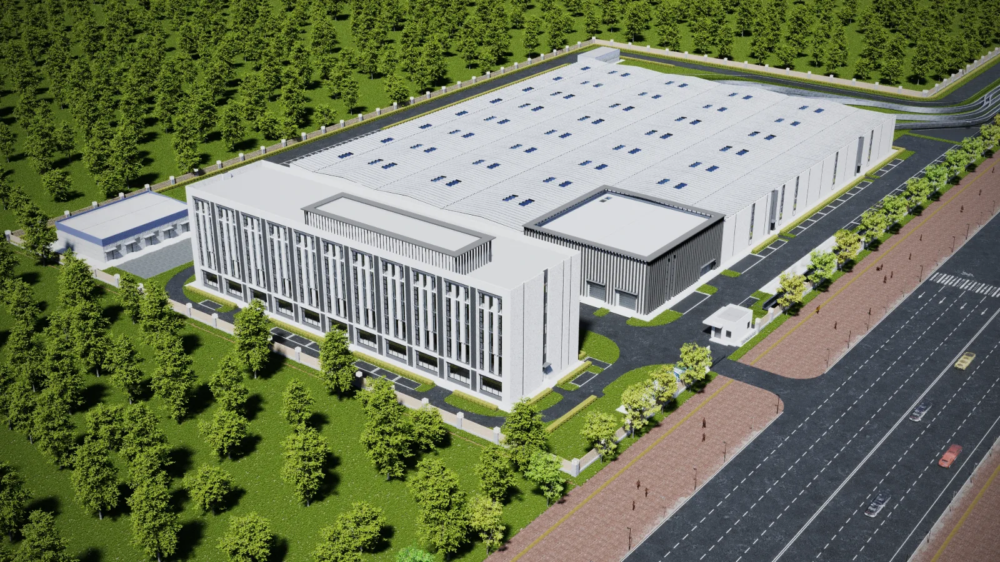
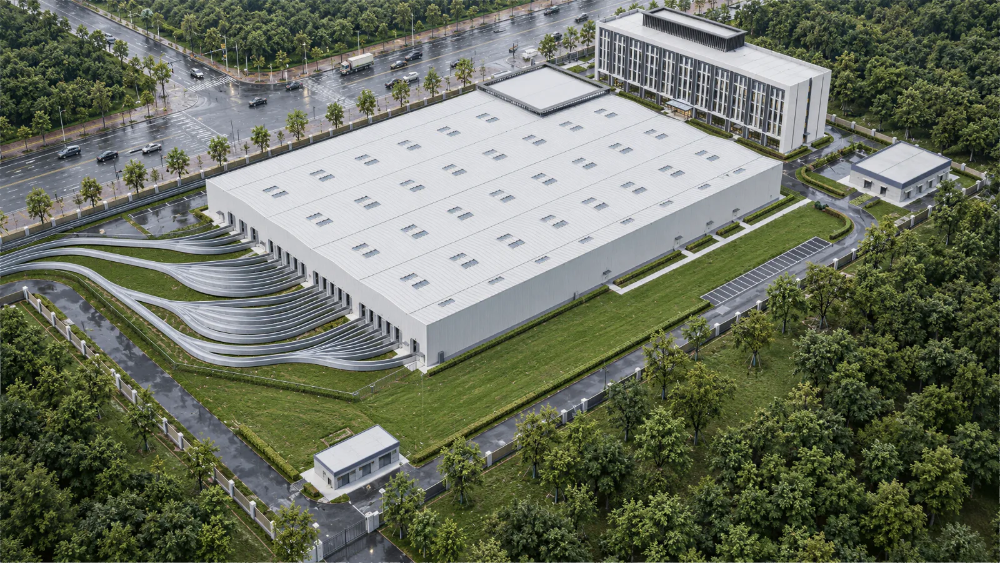
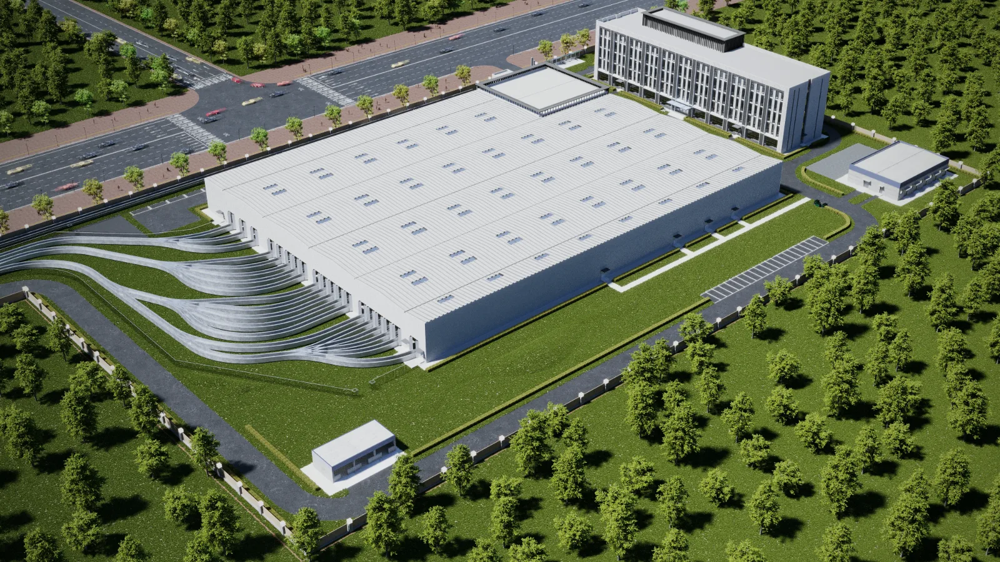
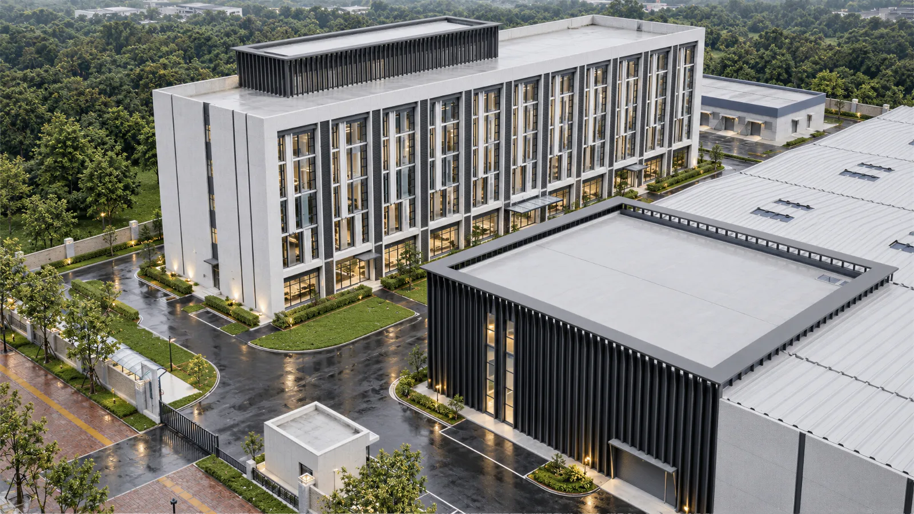
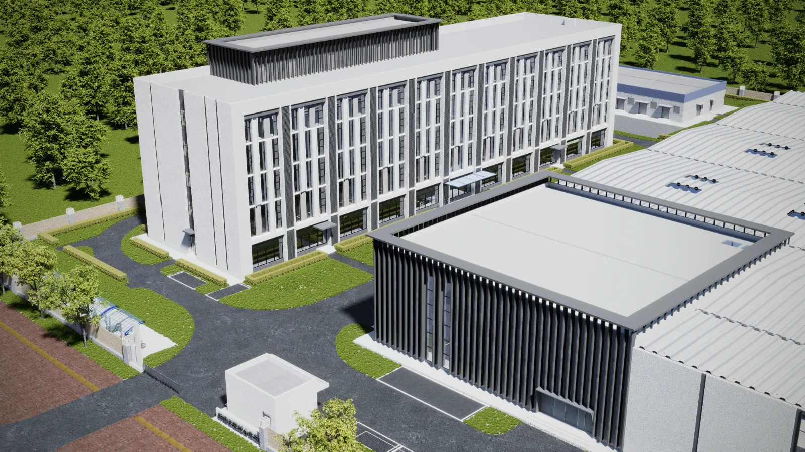

← Back to selected work01 / Project overview 02 / Project overview 03 / Project overview 04 / Project overview 05 / Project overview 06 / Project overview
Architecture
Rail Transit Depot
Aerial and perspective views of the depot, showing building massing, façades and the relationship between architecture and its site.
Project typeArchitecture
My contributionArchitectural modeling / Visualization
ToolsAutoCAD / SketchUp / 3ds Max
Project context
A team rail-transit project involving building and site modeling and visualization for a vehicle depot.
What I did
- Contributed to building and site models to communicate massing and façades.
- Produced aerial and perspective visualizations for design presentations.
- Helped the team organize models and rendered images for delivery.
Work & process
6 images · Click to enlarge











Contribution & credits
Team project. My contribution was architectural modeling and visualization; overall design belongs to the original team.